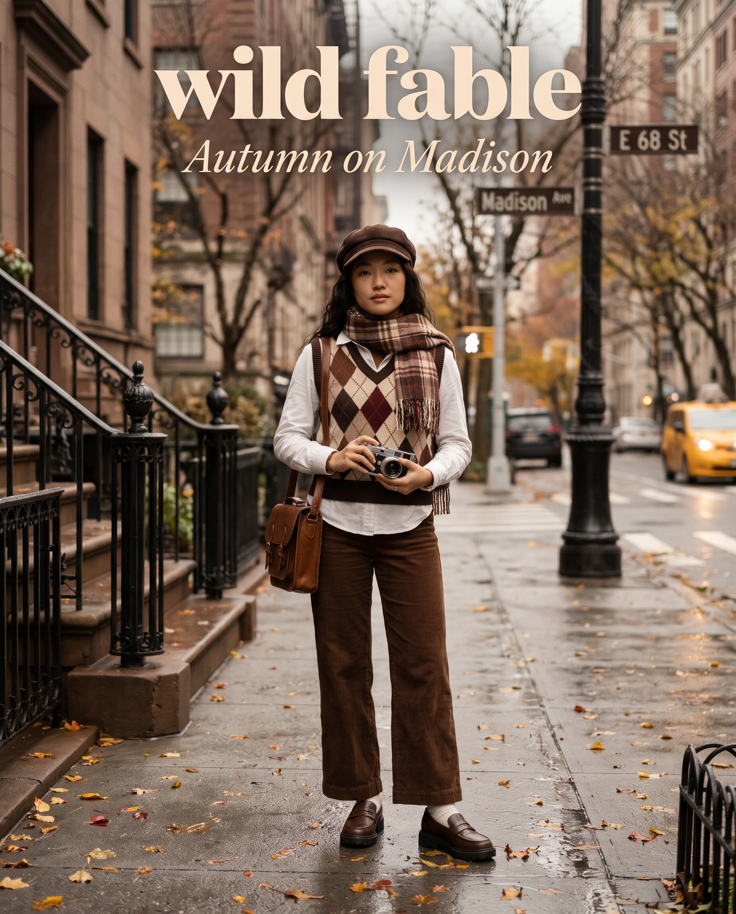
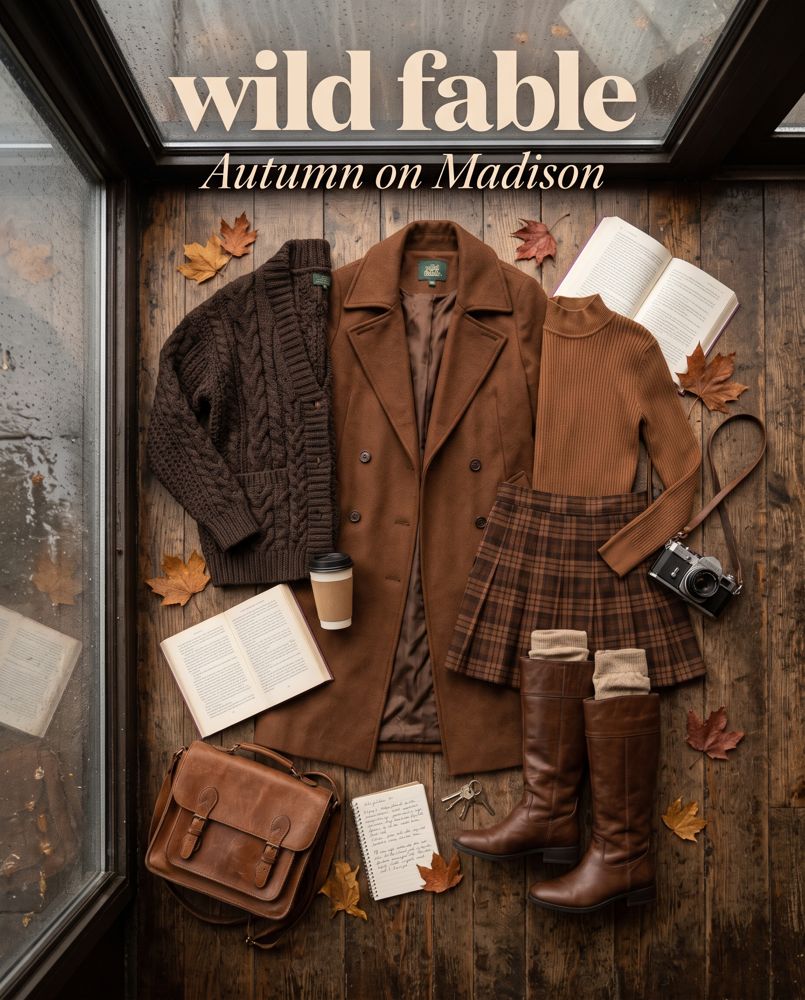

Autumn on Madison — Social, Mobile Stories & Web Display Architecture
Instagram Stories, Reels & TikTok In-Feed Auto-Carousel


Leaderboard Banner, Sponsored Feed Cards & Sidebar Skyscraper
motion-ad-1.mp4
motion-ad-2.mp4
ad-1-feed-4x5.jpg
ad-1-library-macro.jpg
ad-2-ig-story.jpg
ad-3-tiktok.jpg
ad-4-leaderboard.jpg
ad-5-skyscraper.jpg